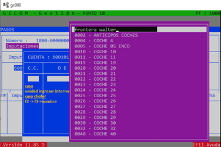

--------------
Sobre el recuadro "C.C" ingresaremos en caso de que sea una unidad, el numero de interno (Ejemplo 1005).
En el caso de que sea un chofer, presionaremos la tecla "F2" luego "F3" e ingresaremos el apellido y nombre del chofer. (Ver Figura N° 5)
Una vez ingresado presionamos "ENTER" y seleccionamos con las flechas del teclado(arriba y abajo) al chofer y volvemos a presionar "ENTER".
(Ver Figura N° 6)
Sobre el recuadro "%" presionaremos "ENTER" y se autocompleta en "100%" automaticamente.
Luego pasaremos al recuadro "DEBITO"(donde deberia aparecer el importe que ingresamos previamente).
(Ver Figura N° 7)
Presionamos "ENTER" nuevamente y luego "F8" DOS VECES.